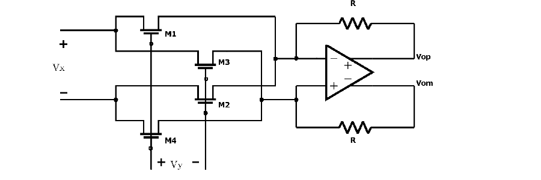

Circuit verification
Transient and FFT simulations used 200 Hz and 1.2 kHz input signals. The report describes a predominantly linear output over the operating range, with the multiplication behavior retained after parasitic extraction.
 LOHAN ATAPATTU
LOHAN ATAPATTUANALOG IC DESIGN · MULTIPLIER
A fully differential CMOS multiplier designed to demodulate the filtered electrode-impedance signal.
DESIGN OVERVIEW
The multiplier uses a CMOS multiplying quad with fully differential operational-amplifier stages. In the triode-region model, matched devices give an output proportional to the product of the two input signals. The circuit forms the I/Q demodulation stage in the impedance-extraction path.
SIMULATION & TAPEOUT
Transient and FFT simulations used 200 Hz and 1.2 kHz input signals. The report describes a predominantly linear output over the operating range, with the multiplication behavior retained after parasitic extraction.
The multiplier layout was prepared in the IHP SG13G2 PDK and submitted for fabrication through the third UNIC-CASS iteration as part of a multi-project wafer run.
DESIGN MATERIALS
The schematic and layout below are taken from the project report and submitted design materials.
